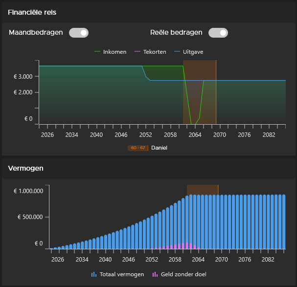
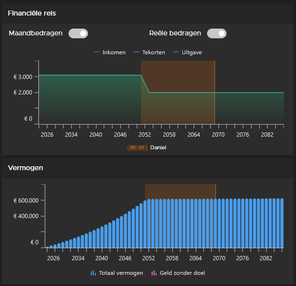
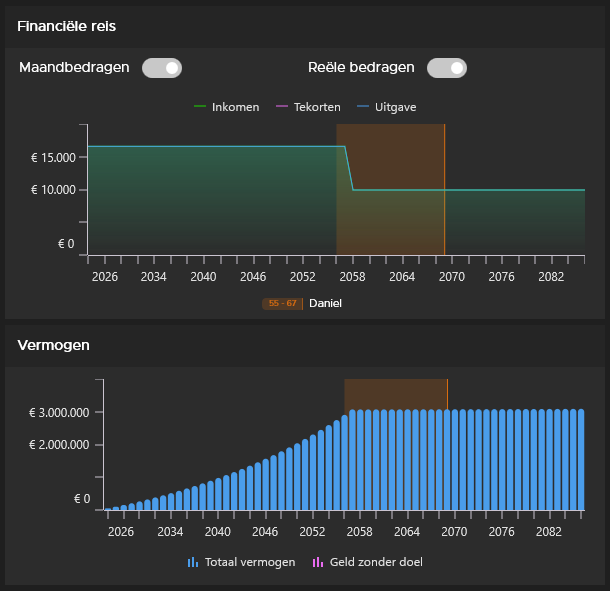
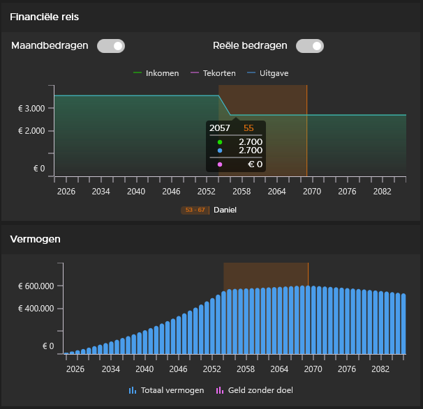

The FIRE movement isn’t monolithic. While the first blog explained what FIRE is and how the basic math works, we’re now diving deeper into the different forms financial independence can take. Not everyone pursuing FIRE wants the same thing. Some choose a minimalist life, others luxury. Some stop working entirely, others take a step back.
Here are the five main types of FIRE and how to figure out which fits you.
Standard FIRE
Standard FIRE is what most people mean when they say “FIRE.” It’s the classic approach: save 25 times your annual expenses and retire according to the 4% rule.
The concept: Build a portfolio large enough to fully fund your living expenses without needing to work.
For whom: People who want to completely stop traditional work and have (or can build) enough wealth to live from their investment returns.
The math: If you spend €40,000 per year, you need €1 million (40,000 × 25).

Figure 1: Standard FIRE shows how investment income fully covers expenses without further contributions
Coast FIRE
Coast FIRE (also known as “the coast number”) is a unique approach that’s much less known, but perhaps the most flexible form of FIRE.
The concept: Save aggressively until you reach a certain amount – your “coast number” – that’s large enough to grow on its own through compound interest to your full retirement amount by traditional retirement age. Once you hit this number, you don’t need to save anymore. You can “coast” to retirement.
For whom: People who want to let go of the pressure of aggressive saving before fully retiring, but still want to ensure a comfortable traditional retirement.
How it works: Say you need €500,000 at age 65. If you’ve invested €120,000 by age 50 with an average return of 10% per year, it will automatically grow to €500,000 without you needing to add anything. That €120,000 is your coast number.
The benefit: Once you hit this amount, you don’t need to work for your retirement anymore. You can take a lower-paying job, work part-time, or simply enjoy your money while waiting until 65.

Figure 2: Coast FIRE shows how your wealth continues growing without further contributions
Lean FIRE
Lean FIRE is the minimalist branch of the FIRE movement. It’s for people who find happiness in simplicity and are willing to drastically reduce their expenses.
The concept: Live frugally, minimize expenses to the absolute minimum, and achieve financial independence with less wealth.
For whom: Minimalists, people willing to live in smaller housing, travel on a budget, and be satisfied with free hobbies like hiking, reading, and time with friends.
The reality: A Lean FIRE practitioner can get by on €2,000 per month, meaning they only need €600,000 (instead of the €1 million Standard FIRE requires). This makes FIRE much faster to achieve.
The price: You give up luxuries. No expensive vacations, no new cars, no dining out. But many Lean FIRE practitioners find they don’t miss it.

Figure 3: Lean FIRE shows how low expenses make FIRE possible with less wealth
Fat FIRE
Fat FIRE is the luxurious opposite of Lean FIRE. It’s for people who want financial independence but aren’t willing to give up their lifestyle.
The concept: Achieve financial independence with a high spending pattern. Think expensive vacations, a nice home, good restaurants, and other luxuries.
For whom: People with higher incomes willing to work longer or invest more aggressively to build a much larger nest egg.
The math: If you spend €10,000 per month (€120,000 per year), you need €3 million. That’s 3x Standard FIRE and 5x Lean FIRE.
The price: It takes much longer or requires a much higher income. But the reward is a luxurious lifestyle without working.

Figure 4: Fat FIRE requires much larger wealth due to the higher spending pattern
Barista FIRE
Barista FIRE is perhaps the most practical and popular form of FIRE for people who don’t want to stop working entirely, but do want to take a step back.
The concept: Achieve financial independence with a smaller portfolio by working partially (part-time, freelance, or a “dream job” with lower stress) to cover your pension contribution and part of your living expenses.
For whom: People who need structure, social contact through work, or simply don’t want to stop working entirely, but do want to let go of the pressure of a full-time job.
How it works: You invest enough to cover the basics of your expenses, and work part-time for the rest. Maybe you work 20 hours a week at a coffee shop (hence the name), as a freelance consultant, or in a hobby that pays.
The benefit: You can stop full-time work earlier than with Standard FIRE because your portfolio doesn’t need to cover everything. Plus, you often still get insurance and other benefits from your part-time work.

Figure 5: Barista FIRE combines investment income with part-time work
Which Fits You?
There’s no right or wrong choice. It depends on your personal situation, your goals, and what happiness means to you.
Ask yourself:
- How much money do I need to be happy? (Lean vs. Fat)
- Do I want to stop working entirely, or can I work part-time? (Standard vs. Barista)
- Do I want to let go of the pressure of saving now, even if I retire later? (Coast)
- How much wealth can I realistically build?
Many people switch between these forms throughout their lives. You can start with Lean FIRE to gain freedom quickly, then switch to Fat FIRE as your wealth grows. Or you can use Coast FIRE until you’re 50, then switch to Barista FIRE.
Start Planning
Whatever form of FIRE you choose, the first step is always the same: understand your current financial situation and make a plan.
The Finance Planner app helps you to:
- Simulate and compare different FIRE scenarios
- See how much wealth you need for your specific spending pattern
- Track your progress toward your chosen FIRE goal
- Determine if Coast FIRE, Barista FIRE, or another form is feasible for you
The app is 100% free with no purchase costs, in-app purchases, or hidden fees. Start planning your financial future immediately without any commitment. Your data remains completely private, and you can use all functionality right away – no complicated setup, just a powerful tool to achieve your FIRE goals.
Start planning today and discover which form of FIRE fits you!
Whether you choose the minimalist path of Lean FIRE, the luxury of Fat FIRE, the flexibility of Coast FIRE, or the balance of Barista FIRE – every path leads to the same goal: the freedom to live life on your own terms.